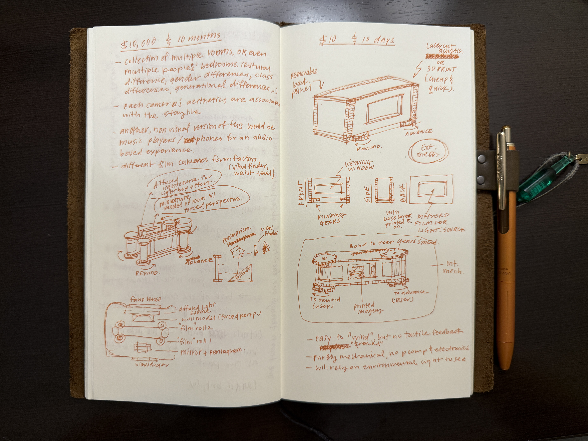

Project Constraints:
Topic: Experienced Time
Attribute: Layered Texture
Device: Repetition
Mood: Nostalgic
$10,000 in 10 months
If I had $10,000 to spend on the project over the course of 10 months, I would do some, if not all, of the following:
- create multiple "camera objects", each featuring something different. Here are some
possibilities:
- different rooms of the same house
- bedrooms of diverse occupants (social & economical class, gender, culture, generational)
- the form of the camera interaction (e.g. waist level, view finder, digital point and shoot, polaroid, smartphone, etc...)
- more experimentation with gear systems - different ways of connecting gears and manipulating directional change for more dynamic and complex shifts when "time is passing"
- Nostalgia can be evoked through different sensory triggers:
- include audio component that is reactive to the scene within the camera. Soundscape or conversation that corresponds to the visuals.
- scent based triggers? this would be a great feature if multiple camera objects featured diverse cultural households, the scents could correlate to unique kitchen staples
- preserve the authentic film camera experience by retrofitting the interior of an actual film camera and design custom hardware for the dual film roll mechanism.
- or perhaps the reverse of that, 3D modeling and printing custom camera bodies to fit the "dual film roll" mechanism - this would also allow for more speculative designs.

$10 in 10 days
In 10 days with $10, I think I can acheive the following specs:
- laser cut acrylic, polymorph, or 3D print the chassis - cheap and quick enclosure building
- limit to 1 "roll of film" at 24 frames, keep the graphics in roughly sketched aesthetic
- no electronic components, rely on mechanical parts only and use ambient light to expose the contents of the film (like the old view master toys)
- use escapement mechanism so the ratcheting sound effect mimics a clock ticking sound, and when the user stops advancing film there is no sound, insinuating that they are "freezing" time.
- no fancy viewfinder mechanism, content is visible through a viewing window at front of the device. May also use a fresnel lens to enlarge and manipulate visual content for a "skewed" perspective.